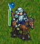

Innehållsförteckning
Tabellförteckning
Kampen om Wesnoth är ett dragbaserat strategispel i fantasymiljö.
Build up a great army, gradually turning raw recruits into hardened veterans. In later games, recall your toughest warriors and form a deadly host against whom none can stand! Choose units from a large pool of specialists, and hand pick a force with the right strengths to fight well on different terrains against all manner of opposition.
Wesnoth har många historier som väntar på att få berättas. Du kan slåss mot orcher, vandöda och banditer som sprider förödelse i kungadömet Wesnoth; strida bredvid drakar bland höga bergstoppar, i alvers sällskap i Aethenskogens gröna marker, sköld mot sköld med dvärgar i Knalgas stora salar, eller tillsammans med Pärlbuktens sjöfolk. Du kan kämpa för att återta Wesnoths tron, använda din makt över vandöda för att kuva de levande, eller leda din stolta orchstam mot segern över människorna som vågat invadera ditt rike.
You will be able to select from among over two hundred unit types (infantry, cavalry, archers, and mages are just the beginning) and fight actions ranging from small-unit ambushes to clashes of vast armies. You can also challenge your friends – or strangers – and fight in epic multi-player fantasy battles.
Battle for Wesnoth is open-source software, and a thriving community of volunteers cooperates to improve the game. You can create your own custom units, write your own scenarios, and even script full-blown campaigns. User-maintained content is available from an add-on server, and the very best of it is incorporated into Battle For Wesnoth's official releases.
Innehållsförteckning
The known portion of the Great Continent, on which Wesnoth abides, is generally divided into three areas: the Northlands, which are generally lawless; the kingdom of Wesnoth and its occasional principality, Elensefar; and the domain of the Southwest Elves in the Aethenwood and beyond.
The Kingdom of Wesnoth lies in the center of this land. Its borders are the Great River to the north, the Dulatus Hills in the east and south, the edge of the Aethenwood to the southwest, and the Ocean to the west. Elensefar, a once-province of Wesnoth, is bordered by the Great River to the north, a loosely defined line with Wesnoth to the east, the Bay of Pearls to the south, and the ocean to the west.
The Northlands is the wild country north of the Great River. Various groups of orcs, dwarves, barbarians and elves populate the region. To the north and east lies the forest of Lintanir, where the great kingdom of the North-Elves keeps to its own mysterious affairs.
Byar ligger utspridda över landet; i dessa kan du läka dina trupper och samla den inkomst som behövs för att underhålla armén. Du kommer också att behöva ta dig över berg och floder, genom skogar, kullar och tundra, och färdas över öppna slätter. I dessa områden har olika varelser slagit sig ner och anpassat sig, vilket tillåter dem att färdas lättare och strida bättre i den bekanta terrängen.
In the world of Wesnoth there dwell humans, elves, dwarves, orcs, drakes, saurians, mermen, nagas, and many other races yet more obscure and wondrous. In accursed lands walk undead and ghosts and specters; monsters lurk in its ruins and dungeons. Each has adapted to particular terrains. Humans inhabit primarily the temperate grasslands. In the hills, mountains and underground caves orcs and dwarves are most at home. In the forests the elves reign supreme. In the oceans and rivers mermen and nagas dominate.
I spelet grupperas raserna i fraktioner; till exempel samarbetar orcher ofta med troll, och alver eller dvärgar med människor. Andra fraktioner reflekterar olika grupperingar bland människorna — till exempel lojalister mot fredlösa. I de flesta kampanjer kontrollerar du trupper ur en enskild fraktion. Ibland lierar sig dock andra fraktioner med varandra, så du kan ställas inför mer än en fraktion i ett scenario.
När Wesnoth startar visas en bakgrund och en kolumn med knappar; dessa kallas Huvudmenyn. Knapparna fungerar bara med en muspekare. För de otåliga rekommenderar vi följande: klicka på "Språk" för att välja språket du vill använda i spelet; klicka sedan på "Träningsspel" för att lära dig hur man spelar; spela därefter kampanjen "Sagan om Två bröder" genom att klicka på "Kampanj" och välja den från listan som visas.

- Träningsspel
- Träningsspelet är ett spel där du lär dig några av de grundläggande manövrar som behövs för att spela spelet. Att vinna eller förlora är inte viktigt här, men däremot att lära sig hur man går till väga. Klicka på knappen Träningsspel för att spela detta. Här tar du rollen som den unge prinsen Konrad eller prinsessan Li'sar, som utbildas av magikern Delfador - var uppmärksam, annars kanske han förvandlar dig till en padda.
- Kampanj
- Wesnoth designades primärt för att spela kampanjer. Kampanjer är en serie sammanhängande scenarion. Tryck på den här knappen för att starta en ny kampanj. Du kommer att presenteras en lista med kampanjer som finns tillgängliga på din dator (fler kan laddas ner om du önskar). Välj din kampanj och tryck på OK för att starta eller Avbryt för att avsluta. Varje kampanj har en svårighetsgrad: lätt, normalsvårt och svårt. Vi rekommenderar normalsvårt eftersom den här nivån är utmanande men inte svår. Du kan kan inte ändra svårighetsgraden under kampanjens gång. Om du har allvarliga problem att slå dig fram genom den lätta svårighetsgraden så kommer antagligen guiden om grundläggande strategi att hjälpa dig. När du väl har valt svårighetsgrad så kommer du att starta med kampanjens första scenario.
- Gruppspel
- Tryck på den här knappen för att spela ett enskilt scenario mot en eller flera motståndare. Du kan spela spelen antingen över internet eller på din dator mot datorer eller mänskliga motståndare. När du väljer den här knappen dyker en dialogruta upp som låter dig välja hur du vill spela scenariot. För mer information se scenarion.
- Sparade spel
- Tryck på den här knappen för att ladda ett tidigare sparat spel. Du kommer visas en dialogruta som listar sparade spel. Välj spelet och tryck på OK för att ladda och fortsätta eller tryck på Avbryt för att återvända till huvudmenyn. Om du väljer ett reprisspel kan du kryssa i repris-kryssrutan. Det sparade spelet kommer då att göra alla drag från början medan du tittar på.
- Extramaterial
- Tryck på den här knappen för att gå in på innehållsservern där massa mer innehåll skapade av vanliga användare finns tillgängligt. Blanda annat finns det många kampanjer, gruppspelseror (som definierar olika fraktioner för gruppspel) och gruppspelskartor. Med knappen "Ta bort tillägg" kan du ta bort tilläggen när du inte längre vill ha dem.
- Språk
- Tryck på den här knappen för att välja språk och välj OK för att använda det eller Avbryt för att fortsätta använda det nuvarande språket. Första gången du startar Wesnot så förinställs språket till engelska, eller standardspråket på ditt system om det kan bestämmas, men när du väl ändrar det så kommer spelet alltid att starta med just det språket.
- Inställningar
- Tryck här för att ändra standardinställningarna.
- Medverkande
- Tryck på den
- Avsluta
- Klicka på denna knapp för att avsluta Wesnoth.
- Hjälp
- Tryck på den här knappen för att öppna upp den integrerade spelhjälpen. Den ger dig information om trupper och alla andra relevanta aspekter av spelet. De flesta av de sakerna nämns i den här manualen.
- Next
- Klicka på den här knappen för att läsa nästa lilla tips ur "Wesnoths krönika".
- Previous
- Click this button to read the previous little tip from the "Tome of Wesnoth".
- Kuvert
- Click this button (the icon of an envelope) to open a dialog where you can enable or disable summary uploads which will help us to better balance campaigns. All data submitted will be anonymous.
Det finns två grundläggande sätt att spela Kampen om Wesnoth
- Spela sammanhängande scenarion, kampanjer, mot datorn.
- Spela ett enskilt scenario mot datorn eller mänskliga motspelare.
En kampanj är en sekvens av strider med en ihopkopplad handling. Vanligtvis har en kampanj mellan 10 och 20 scenarion. Den största fördelen med kampanjer är att de tillåter dig att utveckla din armé. Efter varje slutfört scenario så sparas de kvarvarande trupperna så du kan använda dem i nästa scenario. Om du väljer att inte använda en trupp alls under ett scenario flyttas den med till nästa, så du inte förlora de trupper du inte använder.
Kampanjer, som är det primära sättet som Wesnoth är tänkt att spelas på, är antagligen de mest njutbara, och det rekommenderade, sättet för nya spelare att lära sig hur spelet fungerar.
Ett enskilt scenario tar ungefär 30 minuter till 2 timmar att slutföra. Det här är det snabbaste sättet att spela, men dina trupper sparas inte och du kan inte använda kampanjtrupper. Du kan spela scenarion mot datorn eller mot andra spelare antingen över internet eller på din dator. Scenarion kommer du åt genom "Gruppspel"-knappen i huvudmenyn.
I vanliga gruppspel så spelar du antingen mot spelare via internet (du kan också köra dem på ditt LAN om du har ett). Alla dessa spel koordineras genom Wesnoths gruppspelsserver. Gruppspel kan ta allt från 1 timma till 10 timmar beroende på hur många spelare det är (och storleken på kartan). Den genomsnittliga speltiden är mellan 3 och 7 timmar. Spel kan sparas och laddas hur många gånger du vill så det är möjligt för vissa spela att spelas över 1 eller 2 veckor även om speltiden bara är ett par timmar. Du kan inte ta över trupper i gruppspel från ett scenario till ett annat, så att bygga upp din armés styrka är bara möjligt i scenariot.
Det finns flera möjliga inställningar som du kan göra när klickar på "gruppspels"-knappen:

Det här alternativet ansluter dig till den officiella servern. Du kommer att hamna i lobbyn där du kan skapa ditt spel som du önskar och där många spel redan är öppna och några spelare kanske redan är redo för en ny match.
Det här alternativet öppnar en dialogruta som låter dig skriva in adressen till maskinen du vill anslutat till. I den här dialogen finns det också en "Visa lista"-knapp som visar en lista på officiella servrar som kan användas som reserv om huvudservern inte är tillgänglig.
En ganska komplett lista över officiella och användare servrar kan du hitta på den här webbsidan: Gruppspelsservrar.
För att starta ett gruppspel utan att använda en extern gruppspelsserver måste du själv starta servern som vanligtvis heter wesnothd. Sen måste du ansluta till din egen maskin genom att skriva in 127.0.0.1 som adress. Andra spelare måste kunna ansluta till port 15000 genom TCP på din dator för att kunna spela med dig på din server. Om du är bakom en brandvägg måste du antagligen ändra dina brandväggsinställningar för att tillåta anslutningar på port 15000 och berätta för brandväggen att den ska vidrarebefodra trafiken till maskinen som är värd för spelet. Du bör inte behöva göra ändringar i din brandvägg för att gå med i spel som en officiell server eller någon annan är värd för.
Det här skapar ett spel som körs bara på din dator. Du kan antingen använda det som ett heta stolen-spel där alla spelar på samma dator genom att turas om att sitta i heta stolen. Heta stolen-spel tar ungefär lika lång tid som att spela som spel över internet. Eller så kan du bara spela ett scenario mot en datormotståndare istället för mot en mänsklig motståndare. Det kan vara ett bra sätt att bekanta sig med de olika kartorna som används för gruppspel innan du spelar mot riktiga motståndare. Det kan också vara ett enkelt sätt att utforska de olika truppernas och fraktionernas egenskaper genom att välja vilket fraktion du och dina motståndare i det här spelen ska vara.

Oavsett om du spelar ett scenario eller en kampanj så är den grundläggande skärmlayouten den samma. Majoriteten av skärmen är fylld med en karta som visar vad som händer i spelet. Runt kartan finns olika delar som ger användbar information om spelet och som är beskriven i mer detalj här nedanför.

Längs övre delen av skärmen, från vänster till höger, finns följande saker:
- Knappen Meny
- Knappen Handlingar
- Dragräknare (innevarande drag/maximalt antal drag)
- Ditt guld
- Byar (dina byar/totalt antal byar)
- Ditt antal trupper
- Ditt underhåll
- Din inkomst
- Nuvarande eller kvarvarande tid (i gruppspel med tidsbegränsning)
- Aktuell rutposition (x-koordinat, y-koordinat)
- Aktuell rut-typ

Längs högra delen av skärmen, uppifrån och ner, finns följande saker:
- Karta, nerskalad
- Indikator för tid på dygnet
- Profilen för senast valda trupp
- Knappen Avsluta draget
När du först startar ett scenario eller en kampanj kommer du bara ha ett fåtal trupper på kartan. En av dessa kommer att vara din ledare (identifierad av en liten ikon med en gyllene krona på). Din ledare är vanligtvis placerad på ett kärntorn (inte bara din egen utan också på kärntornen du har erövrat från dina motståndare) och du har tillräckligt med guld kan du rekrytera trupper till din armé. I senare scenarion kan du återkalla erfarna trupper som överlevde tidigare scenarion. Nu kan du börja att bygga din armé för att besegra fienden.
The first thing you will probably want to do is recruit your first
unit. Press Ctrl-R (or right click on an empty castle hex
and select "Recruit") and you will be able to recruit a unit from a list of
all the units available to you. Each recruit is placed on an empty castle
hex. Once you have filled the castle, you cannot recruit any more until
units move off. Your opponent's commander is similarly placed on its castle
keep and will begin by recruiting its troops — so don't dilly-dally
looking at the scenery, there's a battle to be won.
Vid slutet av varje vunnet scenario sparas alla dina återstående trupper automatiskt. Vid början av nästa scenario kan du återkalla dem på ungefär samma sätt som du rekryterar. Återkallade trupper är ofta mer erfarna än rekryter och vanligtvis ett bättre val.
Alla speltyper använder samma soldater, kallade trupper. Varje trupp identifieras av ras, nivå och klass. Varje trupp har styrkor och svagheter baserad på deras motstånd, nuvarande terräng och nivå. Mer information i spelhjälpen.
Allt eftersom dina trupper får erfarenhet kommer det lära sig mer färdigheter och bli starkare. De kommer också dö i strid så du behöver rekrytera eller återkalla mer trupper när det händer. Men välj smart, för trupp har sina styrkor och svagheter som en listig motståndare kommer att utnyttja.
Titta nog på scenariomålen som dyker upp i en dialogruta i början av varje scenario. Vanligtvis kommer du att vinna genom att döda alla fienders ledare och bara bli besegrad genom att din ledare dör. Men scenarion kan ha många andra mål - flytta din ledare till en speciell punkt, säga något eller rädda någon, lösa ett pussel eller hålla ut en belägring till ett visst antal drag har förflutit.
När du vinner ett scenario kommer kartan att bli gråare och Avsluta draget-knappen kommer att ändras till Avsluta scenario. Du kan nu göra saker som att ändra dina spar-inställningar eller (om du är i ett gruppspel) chatta med de andra spelarna innan du trycker på knappen för att gå vidare.
Din armé slåss inte gratis. Det konstar guld att rekrytera trupper och guld för att underhålla dem. Du startar varje scenario med guld som först över från tidigare scenarion (även om varje scenario garanterar dig en minimummängd guld att börja med om du inte fick med dig tillräckligt med guld från tidigare scenarion) och kan få mer genom att möta scenariomålen tidigt och, under ett scenario, genom att ta kontroll över byar. Varje by du kontrollerar kommer ge dig två guldstycken i inkomst per drag. När du först startar ett scenario är det vanligtvis lönsamt att ta kontroll över så många byar du bara kan för att säkerställa att du har en tillräcklig inkomst för att föra kriga. Du kan se ditt nuvarande guld och din nuvarande inkomst överst på skärmen som beskrivs i avsnittet om spelskärmen.
At the start of each scenario, your game state is normally saved. If you are defeated, you may load it and try again. Once you have succeeded, you will again be asked to save the next scenario and play that. If you have to stop playing during a scenario, you can save your turn and load it again later. Just remember, a good Battle for Wesnoth player never needs to save during a scenario. However, most beginners tend to do so rather often.
Innehållsförteckning
Det finns standardinställda kontrollknappar. Du kan byta dem för att passa dig i inställningsmenyn.
Tabell 2.1. Kontroller och snabbtangenter
| F1 | Visa hjälpen för Kampen om Wesnoth |
| Piltangenter | Rulla slagfältet |
| Vänsterklick | Välj trupp, flytta trupp |
| Högerklick | Huvudmenyn, avbryt |
| Mittenklick | Centrera skärmen på pekarpositionen |
| Escape | Avsluta spelet, stäng menyn, avbryt meddelande |
| Ctrl-r | Rekrytera trupp |
| Ctrl-Alt-r | Upprepa senaste rekrytering |
| Alt-r | Återkalla trupp |
| u | Ångra senaste förflyttning (endast deterministiska förflyttningar kan ångras) |
| r | Gör om ångrad förflyttning |
| m | Skicka meddelande till annan spelare (i gruppspel) |
| Ctrl-m | Skicka meddelande till allierade spelare (i gruppspel) |
| Alt-m | Skicka meddelande till samtliga i spelet (i gruppspel) |
| Alt-c | Visa chatlogg |
| n | Stega igenom de trupper som kan förflyttas |
| N | Stega igenom de trupper som kan förflyttas, i bakvänd ordning |
| Mellanslag | Avsluta vald trupps drag och gå vidare till nästa trupp som kan förflyttas |
| Shift-mellanslag | Håll vald trupps position (avsluta truppens förflyttning) |
| Ctrl-mellanslag | Avsluta aktuell spelares drag |
| Ctrl-v | Visa fiendens förflyttning (vart fienden kan nå nästa drag) |
| Ctrl-b | Visa de förflyttningsmöjligheter som fienden har om det inte finns några andra trupper i vägen |
| Ctrl-j | Visa scenariomål |
| Ctrl-f | Växla mellan helskärm och fönsterläge |
| Ctrl-a | Växla mellan accelererad och normal spelhastighet |
| Ctrl-g | Sätt på/stäng av rutmönster |
| Ctrl-c | Ta bort etiketter |
| Ctrl-s | Spara spel |
| Ctrl-o | Öppna sparat spel |
| Ctrl-p | Visa inställningar |
| Ctrl-q | Avsluta spelet |
| / | Sök efter etikett eller trupp |
| t | Fortsätt avbruten truppförflyttning |
| + | Zooma in |
| - | Zooma ut |
| 0 | Återställ till standardzoomning |
| Ctrl-n | Byt namn på trupp |
| 1-7 | Visa hur långt vald trupp kan nå på givet antal drag |
| l | Centrera kartan på ledaren |
| d | Visa beskrivningen för vald trupp |
| Ctrl-g | Sätt på/stäng av rutmönster |
| S | Uppdatera slöjan nu |
| D | Fördröj slöjuppdateringar |
| Alt-l | Namnge terrängruta |
| Ctrl-l | Ange lagetikett |
| Alt-s | Visa statustabell |
| s | Visa statistik |
| Alt-u | Visa trupplista |
| Ctrl-Alt-m | Sätt på/stäng av ljudet |
| : | Command mode |
Varje sida får en liten summa guld att börja med och får två guldstycken per drag plus ett extra guldstycke för varje by den sidan kontrollerar. I en kampanj är startguldet mer än 80% av guldet från föregående scenario eller en minisumma som bestäms av scenariot, vilken vanligtvis är lägre när svårighetsnivån ökar.

Guld används mestadels för att bygga din armé genom att rekrytera nya trupper eller återkalla trupper från tidigare scenarion i en kampanj. Trupper kan rekryteras eller återkallas när en ledare är på ett kärntorn vars slott har minst en ledig slottsruta.
- Högerklicka på en tom slottsruta och välj rekrytera för att rekrytera nya trupper från listan som dyker upp. Kostnaden för att rekrytera beror på trupp men ligger vanligtvis på mellan 10 och 20 guldstycken.
- Högerklicka på en tom slottsruta och välj återkalla för att återkalla trupper från tidigare scenarion. Att återkalla kostar 20 guldstycken per trupp. Se återkalla trupper för mer information.
Varje trupp har också en underhållskostnad. Underhållskostnaden är vanligvis lika med nivån på truppen, om inte truppen har ett lojalt karaktärsdrag, (se nedan).
Så, formeln för att bestämma inkomst per drag är
2 + villages - maximum(0, upkeep - villages)
där underhåll är lika med summan av alla nivåer av dina icke-lojala trupper.
Om underhållskostnaden är större än antal byar+2 så börjar sidan att förlora guld, om de är lika går så går sidan varken med vinst eller förlust.
Kampen om Wesnoth har hundratals typer av trupper med rik variation och många olika egenskaper. Utöver det kan individuella trupper ha specifika karaktärsdrag som gör dem lite olika andra trupper av samma typ. Till sist kan kampanjkonstruktörer lägga till unika trupper till deras kampanjer för att ytterligare öka spelarnas valmöjligheter.
De grundläggande egenskaperna för en trupp är dess hälsopoäng (HP), antal förflyttningspoäng den här och vilka vapen den kan använda och vilken skada de kan göra. Utöver det kan trupper ha andra kännetecken så som sinnelag och speciella egenskaper som beskriv i mer detalj nedan.
Varje trupp har ett sinnelag: redbar, neutral eller ljusskygg . Sinnelaget påverkar hur bra trupper är under olika tider på dygnet. Neutrala trupper är oberörda av tid på dygnet. Redbara trupper gör mer skada på dagen och och mindre på natten. Ljusskygga trupper gör mer skada på natten och mindre på dagen.
De två "dag"- och "natt"-faserna är uppdelade i Morgon, Eftermiddag och Första vakten, Andra vakten genom positionen på solen och månen i dygnstids-grafiken.
Följande tabell visar de olika effekterna under de olika tiderna på dygnet på skada som görs av redbara och ljusskygga trupper:
Tabell 2.2. Tid på dygnet och skada
| Drag | Bild | Dygns-fas | Redbar | Ljusskygg |
|---|---|---|---|---|
| 1 |

| Gryning | — | — |
| 2 |

| Dag (morgon) | +25% | -25% |
| 3 |

| Dag (eftermiddag) | +25% | -25% |
| 4 |

| Skymning | — | — |
| 5 |

| Natt (första vakten) | -25% | +25% |
| 6 |

| Natt (andra vakten) | -25% | +25% |
| Särskild |

| Underjorden | -25% | +25% |
Vissa scenarier äger rum i underjorden eller i grottor, där det råder evig natt!
Till exempel: tänk dig en strid mellan en redbar och en ljusskygg trupp när
båda har en grundskada på 12. I gryning och skymning kommer båda att göra 12
poäng skada om de träffar. Under morgonen eller eftermiddagen kommer den
redbara truppen att göra (12 * 1.25) eller 15 poäng i
skada medan den ljusskygga truppen kommer att göra (12 *
0.75) eller 9 poäng i skada. Under första vakten eller andra
vakten kommer den redbara truppen göra 9 poäng i skada jämfört med den
ljusskygga truppens 15 i skada.
Om en liknande neutral trupp skulle slåss skulle den alltid göra 12 poäng i skada oavsett tid på dygnet.
Trupper har karaktärsdrag som reflekterar hur det är. Karaktärsdrag tilldelas slumpmässigt till trupper när de skapas. De flesta trupper får två karaktärsdrag.
De möjliga karaktärsdragen för de flesta trupper är:
- Intelligent
- Intelligenta trupper behöver 20% mindre erfarenhet för att gå till nästa nivå (Troll får inte det här karaktärsdraget). Intelligenta trupper är vanligtvis väldigt användabara i början av en kampanj eftersom de kan avancera till högre nivåer snabbare. Senare i kampanjer är intelligenta trupper inte lika använda eftersom när truppen nått sin maxnivå får den endast en mindre bonus (AMLA). Om du har många maxnivå-trupper så kanske du vill återkalla trupper med de mest användbara karaktärsdragen.
- Snabb
- Snabba trupper har 1 extra förflyttningspoäng men 5% mindre HP än vanligt. Snabb är vanligtvis det mest utmärkande karaktärsdraget, särskild i långsammare trupper som troll och tungt infanteri. Trupper med karaktärsdraget snabb har ofta väldigt mycket bättre rörlighet i svår terräng, vilket kan vara viktigt att komma ihåg när du sprider dina trupper. Dock är snabba trupper inte lika starka som trupper utan detta karaktärsdrag och är därför sämre lämpad för att hålla utsatta positioner.
- Tålig
- Motståndskraftiga trupper har 4 HP plus 1 HP per nivå mer än vanligt. Motståndskraftiga trupper kan vara användbara i alla stadier av en kampanj och det här är en användbar förmåga för alla trupper. Att vara motståndskraftig är ofta en bra förmåga när den uppstår i trupper som har någon kombination av låga hälsopoäng, bra försvar eller hög resistans. Motståndskraftiga trupper är speciellt värdefull till att hålla strategiska positioner mot fiender.
- Stark
- Starka trupper gör 1 mer i skada för varje lyckat slag i närstrid och har 1 mer HP. Även om den är användbar för alla närstrids-trupper så är styrka mest effektivt för trupper som har ett högt antal slag, som till exempel alvkrigaren. Starka trupper kan vara väldigt användabara när bara lite extra skada är allt som behövs för att vända ett skadande slag till ett dödande slag.
Det finns också några förmågor
- Träffsäker
- Träffsäkra trupper gör 1 mer i skada för varje lyckad träff. Träffsäkerhet är ett karaktärsdrag som bara alverna har. Alverna är kända för deras förunderliga elegans och deras färdighet med bågen. Några har dock en naturlig färdighet som överträffar sina bröders. Dessa alver gör ytterligare en till poäng i skada med varje pil.
- Livskraftig
- Renowned for their vitality, some dwarves are sturdier than others and can rest even when traveling. Healthy units have 1 HP plus 1 HP per level more than usual and rest heal the usual 2 HP after each turn they did not fight. They also suffer only half the damage from poison.
- Orädd
- Får ingen negativ attackbonus under den ogynnsamma delen av dygnet (Troll, Vandrande döda).
Det finns också några färdigheter som inte tilldelas slumpmässigt. Dessa färdigheter kan antigen tilldelas av scenariokonstruktören eller alltid vara tilldelade beroende på trupptypen:
- Lojal
- Lojala trupper behöver inte underhållas. De flesta trupper måste underhållas i slutet av varje drag mot en kostand som är lika med deras nivå. Loyala trupper behöver inte detta underhåll. Under kampanjer så kan vissa trupper välja att sälla sig till spelarens styrkor av egen vilja. Dess trupper markeras som lojala. Även om du kan behöva betala för att återkalla dem så har de aldrig någon underhållskostnad. Det kan göra dem ovärderliga under en lång kampanj när det är ont om guld. Den här färdigheten ges aldrig till rekryterade trupper så det kan vara osmart att entlediga sådana trupper eller skicka den mot en säker död.
- Vandöd
- Vandöda trupper är immuna mot gift och dessutom fungerar det inte att varken suga livskraft från dem eller förpesta dem. Vandöda trupper har vanligtvis Vandöd som deras enda färdighet. Eftersom vandöda trupper är de dödas kroppar som återuppstått förr att slåss igen så har gift ingen effekt på dem. Det här kan göra dem ovärderliga för att ta itu med fienden som använder gift i samband med deras attacker.
- Konstruktion
- Mekaniska trupper är inte levande och är därför imuna mot gift och dessutom fungerar det varken att suga livskraft från dem eller förpesta dem. Mekaniska trupper har vanligtvist Mekanisk som deras enda färdighet.
Vissa trupper har specialattacker. De listas här nedan:
- Rygghugg
- When used offensively, this attack deals double damage if there is an enemy of the target on the opposite side of the target, and that unit is not incapacitated (e.g. turned to stone).
- Bärsärkagång
- Oavsett om den används offensivt eller defensivt så gör den här attacken att striden fortsätter tills en av kombattanterna har dräpts eller 30 omgångar med attacker har gjorts.
- Storma
- When used offensively, this attack deals double damage to the target. It also causes this unit to take double damage from the target's counterattack.
- Suga livskraft
- Den här truppen tar hälsa från levande trupper och helar sig själv med häften av skadan den gör (avrundat nedåt).
- Första slaget
- Den här truppen slår alltid först med sin attack, även när de försvarar.
- Magisk
- Den här truppen har alltid 70% chans att träffa oavsett försvarsmöjligheterna truppen den anfaller har.
- Prickskytt
- När den används offensivt har den här attacken alltid minst 60% chans att träffa.
- Pest
- När en trupp dödas av en pestattack så ersätts den truppen med en vandrande död på samma sida som truppen med pestattacken. Det här fungerar inte på vandöda eller på trupper i byar.
- Gift
- Den här attacken förgiftar målet. Förgiftade trupper förlorar 8 HP varje drag tills de botas eller endast har 1 HP kvar. Gift kan inte, av sig själv, döda en trupp.
- Sakta ner
- Den här attacken slöar ner målet tills draget är slut. Slö halverar skadan av en attack och förflyttningskostanden för en slö trupp dubblas. En trupp som är slö kommer att ha en snigelikon i informtionsskärmen när den är markerad.
- Förstena
- Den här attacken förvandlar målet till sten. Trupper som har förvandlats till sten kan inte röra sig eller anfalla.
- Svärma
- Antalet slag på den här attacken minskar när truppen är skadad. Antalet slag är proportionell till % av HP/maximal HP som truppen har. Till exempel en trupp med 3/4 av sin maximala HP kommer att få 3/4 antal slag.
Några trupper har förmågor som antingen direkt påverkar andra trupper eller har en effekt på hur truppen interagerar med andra trupper. De här fömågorna listat här nedan:
- Bakhåll
- Den här truppen kan gömma sig i skog och förbli gömd för sina fiender. Fiender kan inte se den här truppen medan den är i skogen om de inte har trupper precis brevid den. Den fiendetrupp som först upptäcker den här truppen förlorar direkt resten av sina förflyttningspoäng.
- Gömd
- Den här truppen kan gömma sig i byar (undantaget vattenbyar) och förbli osedd av sina fiender om de inte står precis brevid den. Fiender kan inte se den här truppen medan den är i en by om de inte har trupper precis brevid den. Den fiendetrupp som först upptäcker den här truppen förlorar direkt resten av sina förflyttningspoäng.
- Bota
- En trupp som kan bota sina allierade från förgiftning, även om den allierade inte kommer att helas ytterligare under det draget den vart bota från förgiftning.
- Hela +4
- Tillåter truppen att hela närstående vänliga trupper i början av varje drag. En trupp som tas om hand om av en helare kan hela upp till 4 HP per drag eller stoppa gift från att verka det draget. En förgiftad tripp kan inte botas från sin förgiftning av en helar utan möte söka vård i en by eller av en trupp som kan bota.
- Hela +8
- Den här truppen kombinerar örter med magi för att hela trupper snabbare än normalt möjligt på slagfältet. En trupp som tas hand om av den här helaren kan helas upp till 8 HP per drag eller stoppa gift från att påverka truppen det draget. En förgiftad trupp kan inte botras av en helare utan måste söka vård från en by eller en trupp som kan bota.
- Lysa upp
- Den här truppen lyser upp de kringliggande rutorna och gör att redbara trupper slåss bättre och att ljusskygga trupper slåss sämre. Alla trupper nära den här truppen kommer att slåss som om det var skymning när det är natt och som om det var dag när det är skymning.
- Ledarskap
- Den här truppen kan leda vänliga trupper som är nära den och göra att de slåss bättre. Närstående vänliga trupper med lägre nivå kommer göra med skada i strid. När en trupp, med lägre nivå än, står brevid och är på samma sida som en trupp med ledarskap strider gör dess attacker 25% mer skada gånger skillnaden i deras nivåer.
- Skuggsteg
- Den här truppen blir osynlig under natten.- En fienden kan inte se den här truppen på natten om de inte står precis brevid den. Den fiendetrupp som först upptäcker den här truppen förlorar direkt resten av sina förflyttningspoäng.
- Regenerera
- Den här truppen kommer hela sig själv 8 HP per drag. Om den är förgiftad kommer den att bota sig själv istället för att hela sig.
- Stigfinnare
- Den här truppen är skicklig på att förflytta sig förbi fiender snabbt och ignorerar alla fiender kontrollzoner.
- Ståndaktig
- Den här truppens motståndskraft dubblas till maximalt 50% när den försvarar. Sårbarheter påverkas inte.
- Dyka
- Den här truppen kan gömma sig i djupt vatten och förbli osynlig för dess fiender. Fiender kan inte se den här truppen medan den är i vattnet om de inte har trupper precis brevid den. Den fiendetrupp som först upptäcker den här truppen förlorar direkt resten av sina förflyttningspoäng.
- Teleportera
- Den här truppen kan teleportera sig mellan två vänliga byar genom att använda en av sina förflyttningspoäng.
Trupper belönas med erfarenhet för strider. Efter att ha fått tillräckligt med erfarenhet kommer det att gå upp i nivå och bli mer kraftfulla. Mängden erfarenhet som fås beror på fiendens nivå och hur striden slutade: om en trupp dödar sin fiende så får den 8 erfarenhetspoäng per nivå som fienden hade (4 om fiendens nivå är 0) medan en trupp som överlever en strid utan att döda sin motståndare belönas med 1 erfarenhetspoäng per nivå som fienden hade. Alltså:
Tabell 2.3. Erfarenhetsbonusar för att döda eller strida mot fiender på olika nivåer
| fiendenivå | dödsbonus | stridsbonus |
|---|---|---|
| 0 | 4 | 0 |
| 1 | 8 | 1 |
| 2 | 16 | 2 |
| 3 | 24 | 3 |
| 4 | 32 | 4 |
| 5 | 40 | 5 |
| 6 | 48 | 6 |
Efter ett du klarat ett scenario så kommer alla överlevande trupper vara tillgängliga för dig att återkalla i nästa secnario. Du kan inte förflytta eller anfalla med en trupp samma drag som du rekryterat eller återkallat den. En återkallad trupp har samma nivå, erfarenhetspoäng och (ibland) magiska föremål och kommer ha full hälsopoäng.
Om du klickar på en trupp så identifieras alla platser som den kan flytta
till under det nuvarande draget genom att gråa ut alla onåbara rutor (om du
trycker på knapparna 2-7 så kommer rutorna som kan nås i så många drag att
visas på ett liknande sätt). Om du i det här läget håller musen över en ruta
så kommer vägen den tar dit att visas liksom ytterligare information om
vilken försvarsbonus din trupp får på rutan och. Om det tar mer än ett drag
att nå rutan kommer antal drag det tar för din trupp att komma fram att
visas. Om du inte vill flytta truppen så kan du gå ur det här läget genom
att välja en annan trupp (genom att klicka på den nya truppen eller genom
att trycka på n or N) eller genom att
högerklicka (Kommando-klicka på Mac) någonstans på kartan.
om du väljer att flytta den valda truppen, klicka på rutan du vill flytta den till och din trupp kommer att förflytta sig mot den rutan. Om du väljer en destination som är utom räckhåll under det aktuella draget kommer din trupp att flytta sig så långt den kan i det aktuella draget och gå in i ett gå till-läge. I ett gå till-läge kommer din trupp att fortsätta röra sig mot sin destination under de efterföljande dragen. Du kan enkelt ångra gå till-förflyttningen i början av ditt nästa drag. Du kan också ändra din trupps destination genom att markera den truppen och sedan välja en ny destination, eller klicka på truppen igen föra att avbryta gå till-läget.
Att flytta till en by som är neutral eller som ägs av en fienden kommer ta ägarskap på den och avsluta just den truppförflyttningen.
De flesta trupper har en kontrollzon som påverkar rutorna som din trupp kan nå och vägen din trupp tar. De här restriktionerna visas automatiskt i både vägarna som visas för din trupp och rutorna som den kan flytta till det nuvarande draget.
En trupps kontrollzon täcker de sex rutorna som är precis nära din trupp och trupper som flyttar in i en fiendes kontrollzon tvingas stanna. Trupper med förmåga att stigfinna ignorerar fienders kontrollzoner och kan flytta genom den fritt utan att tvingas stanna. Nivå 0-trupper anses vara för svaga för att ha en kontrollzon och alla trupper kan fritt flytta sig genom rutorna som omger en nivå 0-trupp
Ovanför energimätaren som visas bervid alla dina trupp visas en glob. Denna glob är:
Tabell 2.4. Sfärer
| Orb | Bild | Description |
|---|---|---|
| Green |

| If you control the unit and it hasn't moved this turn |
| Yellow |

| If you control the unit and it has moved this turn, but could still move further or attack |
| Red |

| If you control the unit, but it has used all its movement this turn |
| Blue |  | If the unit is an ally you do not control |
| - |

| Enemy units have no orb on the top of their energy bar |
Under varje trupp så är det normalt en färgad ellips eller bas. Färgen identifierar dess lag. I en kampanj är den mänskliga sidan röd. Lagfärgen dyker också upp i delar av truppens kläder eller kanske på en sköld eller en gradbeteckning.
Vanligtvis så är ellipsen en solid skiva. På trupper med nivå 0 så kommer du se en ellips som har streckade kanter. Det indikerar att truppen inte har någon kontrollzon.
Some campaigns use a star-shaped base to indicate leaders and heroes (units which are somehow special and for example not allowed to die in the course of the scenario); others use a silver crown icon above the energy bar to mark heroes. Still others have no specific hero indicator at all. Which (if any) is used is a stylistic choice left to campaign designers.
Om du flyttar precis intill en fiendetrupp kan du anfalla den. Klicka på din trupp som är brevid fiendetruppen och klicka på fienden som du vill anfalla - detta kommer att ta upp ett fönster där ger dig ytterligare alternativ för striden. Varje trupp har ett eller flera vapen som den kan anfalla med. Några vapen, som svärd, är närstridsvapen och andra vapen, som bågar, är avståndsvapen.
Om du anfaller med ett närstridsvapen så kommer fienden att kunna slå tillbaka med sitt närstridsvapen. Om du anfaller med ett avståndsvapen så kommer fienden att kunna slå tillbaka med sitt avståndsvapen. Om en fiende inte har ett vapen av samma typ som det du anfaller med kommer de vara oförmögna att slå tillbaka och göra någon skada på dig i den striden.
Olika typer av anfall gör olika mängd skada, och ett visst antal slag kan göras med varje vapen. Till exempel, en alvkrigare gör 5 poäng i skada med sitt svärd varje gång det träffar, och han kan slå 4 slag med sitt svärd i en attack. Det här skrivs som 5-4 vilket betyder 5 poäng skada per träff, och 4 slag.
Varje trupp har en viss chans att träffas beroende på vilken terräng den är på. TIll exempel trupper i slott och byar har mindre chans att träffas, och alver i skogar har en låg chans att träffas. För att se en trupps försvarsvärde (alltså chans att inte träffas) på en terräng, klicka på truppen, och för sedan musen över terrängen du är intresserad av och då kommer försvarsvärdet att visas som ett procentvärde i högra statusfältet, liksom visas på terrängrutan.
Du kan få ytterligare information, inklusive chansen att anfallaren och försvararen dödas genom att klicka på "skadekalkyl"-knappen i stridsfönstret.
- Klinga: Vapen med en skarp egg som används till att skära bitar av kött från en fiende. Exempel: dolk, kroksabel, sabel och drakklor.
- Stick: Vapen med en vass spets och antingen ett långt handtag eller en projektil som används för att genomborra en fiendes kropp och skada hans interna organ. Exempel: Knekt- eller infanteripik och pilar.Weapons with a sharp point and either a long handle or a missile, used to perforate foe's body and damage internal organs. Examples: Knight or infantry pike, arrow.
- Kross: Vapen som varken har skarp udd eller vass spets men som är kort nog att krossa fiendens ben. Exempel: spikklubba, stav och trollnäve.ett skaprWeapons having neither a sharp point nor a cutting edge, but heavy enough to break an enemy's bones. Examples: mace, staff, Troll fist.
- Cold: Weapons based on cold or ice missiles. Example: A Dark Adepts's chill wave.
- Eld: Vapen som använder eld för att steka sina fiender som en kyckling. Exempel: Drakfolkets eld.
- Arcane: An attack that dispels the magic animating zombies, specters, and other undead creatures and spirits. Example: A white mage's magic attack.
Varje trupp är mer eller mindre sårbara mot olika typer av attacker. 6 figurer i truppbeskrivningen visar styrkor eller svagheter som truppen har mot de 6 olika attacktyperna. Ett positiv värde betyder att truppen kommer att skadas mindre av den attacktypen. Ett negativt värde betyder att truppen är speciellt sårbar för den typen av attack.
Exempelvis: Drakfolkets fjäll skyddar dem mot de flesta attacktyper förutom stickvapen och köldvapen. Mänskliga kavaleritrupper är generellt sett väldigt bra skyddade mot blad- och stickvapen men väldigt sårbara mot krossattacker och ockulta attacker.
Att använda den bästa attacktypen mot fiendetrupper kommer avsevärt att öka din chanser att döda dem.
En trupp kan helas maximalt 8 hälsopoäng per drag. En trupp som inte flyttar sig eller slåss under en tur sägs vila och kommer att återfå 2 hälsopoäng. Hälsopoäng som återfås genom att vila läggs på hälsopoäng som återfås genom helning, så det är möjligt för en trupp att återfå upp till 10 hälsopoäng per drag.
Det finns två grundläggande sätt för trupper att helas:
- Waiting in a village. The unit will heal 8 hitpoints every turn.
- Att vara nära en enhet med möjlighet att hela Antalet hälsopoäng som helas specificeras i truppens beskrivning. Det är antingen hela +4 eller hela +8.
Troll och enter har förmågan att hela sig själva naturligt genom generering. De kommer att hela sig 8 poäng per drag om de skadas. Notera att eftersom alla trupper bara kan hela maximalt 8 poäng per drag får troll och enter ingen ytterligare fördel från att stå på en by eller brevid en trupp med möjlighet att hela.
Some attacks can inflict poison damage on your unit. When this happens the poisoned unit will take 8 damage each turn until it is cured. Poison can be cured by waiting on a village or being next to a unit with the cures ability. Units with the heals ability can only prevent the poison from causing damage that turn, not cure it. When poison is cured the unit does not gain or lose hitpoints on that turn due to healing/poisoning. A unit can not be healed normally until it is cured of poisoning. Resting is still allowed, although it will not substantially diminish the poison's effect.
Några fler tips gällande helning:
- Det kan ta en trupp flera turer att bli fullt helade.
- Helare (Alvschamaner, Alvdruider, Älvor, Vita magiker, Ljusets magiker och Paladiner) helar alla skadade trupper runt dem, så du kan hålla trupper nära striden utan att förlora dem.
- Helare kan inte hela fiendetrupper.
- Helare kan inte hela sig själva, men se nästa punkt.
- Använda dina helare i par så kan de hela varandra om det behövs.
- Multiple healers from different allied sides can heal the same unit and speed up healing.
- Troll och enter kan inte regenerera andra trupper.
- Troll och enter kan bota sig själva från gift, precis som en by gör.
Innehållsförteckning
Följande grundläggande stridsprinciper och tips är avsedda att hjälpa dig starta upp din karriär som en wesnotisk krigsveteran. De få konkreta exempel som finns är mest avsedda för kampanjen "Tronarvingen".
Skicka inte dina trupper mot en säker död. När en trupp har förlorat mer än hälften av sina hälsopoäng (HP) så bör du överväga att flytta den i säkerhet och antingen stationera den i en by för att helas eller flytta honom till en helare (som en Alvshaman eller en Vit magiker). Helare är väldigt användbara!
Detta är av praktiska skäl: en väldigt skadad trupp kan inte hålla tillbaka eller döda fienden. Under anfallet och motattacken, kommer den oftast att gå under. Utöver det, genom att skicka den mot en säker död så kommer dess erfarenhetspoäng (XP) att förloras. Att rekrytera en ersättare kanske inte är möjligt eftersom ledare inte är i sitt kärntorn eller eftersom det knappt finns något guld. Även om du kan rekrytera en ersättare så är den ofta långt borta från fronten. Så slösa inte bort dina trupper.
Hur vaktar du dina skadade trupper? De försvaras bäst genom att vara utom räckhåll för fienden. Ingen fiende kan anfalla dem om fienden inte ens kan komma nära dem. Nästa avsnitt om kontrollzoner (ZOC) visar hur du kan begränsa fiendens förflyttningar.
I Handlingar-menyn kan du välja "Visa fiendedrag" för att visa alla möjliga platser din fiende kan flytta till. Det här tar hänsyn till kontrollzoner. Då kan du alltså kontrollera att din trupp som är nära döden, vilken är bakom, verkligen inte kan anfallas av eftersom fienden inte kan flytta sig när den.
När arméerna möts, kanske du vill vara den första att anfalla. Så försöka att flytta ut ur fiendearméns räckvidd. Han kan inte anfalla men kommer antagligen att gå närmare så han kan anfallas nästa gång.
Varje trupp på nivå 1 eller högre har en kontrollzon (ZOC) som täcker alla 6 intilliggande rutor. Det betyder att när en fiende flyttar in i någon av de 6 intilliggande rutorna så tvingas den stanna och dess flyttfas avslutas (enbart fiender med en ovanliga stigfinnar-förmågan kan ignorera detta).
På grund av kontrollzoner kan inte en fiende slinka mellan två trupper som står på en nord-sydlig eller diagonal linje och har exakt 1 eller 2 rutor mellan dem. Genom att kombinera dessa par till en lång mur eller använda dem i olika riktningar kan du hindra fienden från att komma åt skadade trupper bakom. Han måste besegra truppen som har kontrollzonen först. Om fienden knappt kan nå den, även en enstaka trupp kan skydda en liten yta bakom sig själv.
Genom att ställa upp trupper nära eller med max 1 rutas avstånd mellan dem kan du bygga upp en kraftfull försvarslinje. Notera att eftersom Wesnoth använder sexhörningar så är en "linje" från öster till väster inte en rak linje utan en sicksack-kurva. De "riktiga" linjerna är de nord-sydliga och diagonala linjerna.
Om de kommer från en sida så kan fienden bara attackera en enskild trupp i din front med bara två av sina egna trupper åt gången. Som en tumregel, en hälsosam trupp utan speciella svagheter kan motstå en attack från två normala fiendetrupper på samma eller lägre nivå utan att dödas.
Dessvärre måste din front ofta böjas föra att forma en kil eller för att passa in i terrängen. Vid dessa hörnpunkter kan 3 fiendetrupper anfalla. Det händer också i slutet av front om den är för kort. Använd trupper med höga hälsopoäng på rätt terräng eller med rätt resistans för att hålla dessa svaga punkter. De här är det som är mest sannolika att dödas så använda trupper med inga eller få erfarenhetspoäng (XP) för detta syfte.
Att rada upp dina trupper förhindrar fienderna från att omringa någon av dem. På grund av kontrollzoners så är en trupp med en fiende bakom sig och en framför sig fångad.
När en trupp i frontlinjen är hårt skadad kan du flytta honom i säkerhet bakom din försvarslinjen. För att uprätthålla fronten måste du antagligen ersätta honom med en reserv så håll ett par extra trupper bakom frontlinjen. Om du har helare så kommer skadade trupper i den bakre fronten att återhämta sig fortare.
Notera att dina trupper kan passera genom rutor som innehåller dina egna trupper.
Försök att positionera dina trupper så att de anfaller från en ruta med bra försvar mot en fiende i en ruta med låg försvar. Då kommer det vara mindre chans att fiendernas motdrag skadar.
Till exempel kanske du positionerar dina alver precis innanför skogskanten så de anfallande orcherna måste stå på graslandet medan dina alvera njuter av skogens försvar.
Att avancera och attackera är så klart det mest intressanta delen på din väg till segern. Döda eller skadade fiender i din väg och flytta din försvarslinje framåt. Det kan bli svårt eftersom fienden får anfalla tillbaka när det är hans drag.
Ofta kommer du att gå med flera trupper mot en ensam motståndare för att göra slut på honom, men de formade din försvarslinje som nu är delvis bruten. Kanske det inte spelar någon roll eftersom du är utom räckhåll för fiendernas trupper nästa drag. Kanske spelar det roll efter som du bara lyckades försvaga en väldigt stark fiende och nästa drag kommer han att slå tillbaka. Kanske en ryttare kan ge det dödande slaget.
Att anfalla först är en fördel eftersom det möjliggör dig att välja vilka trupper som ska slåss. Ta fördel av fiendens svagheter: till exempel använd dina avståndsattacker mot fiender utan avståndsvapen. Ta fördel av svagheter som Ryttarnas sårbarhet mot stickvapen. Men kom ihåg att det får anfalla tillbaka under deras drag så du kanske har svagheter som fienden kan utnyttja.
Till exempel, Ryttare kan upprätthålla fronten mot Orchkämpar och Trollvalpar väldigt bra eftersom de har viss motståndskraft mot hugg- och krosskador. Men din Ryttare kan lätt falla för Orchbågskyttar och Spjutvättar.
Det lönar sig vanligtvis om du kan definitivt döda (eller nästan döda) den mötande truppen. Om du är osäker på om du kan döda fienden i ett drag, antingen säkerställ att din trupp kan motstå motattacken eller bestäm dig för att du är villig att förlora den truppen. För att motstå fiendens nästa attack är det ofta smart att anfalla på det avstånd som tillåter fienden att göra minst skada på dig, hellre än att välja det avstånd som förväntas göra mest skada på fienden.
Speciellt, använd dina avståndsvapen om fienden inte har någon avståndsattack. Datorns stadardval kollar bara efter den mesta skadan du kan göra, så att använda den resulterar ofta i att dina trupper tar mer skada än nödvändigt.
Kom ihåg att Redbara trupper som människor slåss bättre under dagen och Ljusskygga trupper som orcherna och de vandöda slåss bättre på natten. Optimalt vill du först möta fienden när du är stark och / eller han är svag. När fienden har sin starka tid lönar det sig oftast att förstärka dina linjer och hålla en fördelaktig försvarsposition. När dess svaga tid börjar, tryck framåt.
Till exempel, alver kan hålla ut i en skog under en nattligt orchangrepp och sedan avancera vid soluppgången. Du kan till och med se att datormotståndaren aktivt retirerar sina orcher under dagen.
Under tiden en kampanj pågår är det viktigt att bygga upp en erfaren styrka. Senare scenarion kommer att anta att du har nivå 2- och nivå 3-trupper tillgängliga att återkalla.
Dina trupper får mest erfarenhetspoäng (XP) från att döda en fiendetrupp (8XP per nivå på truppen de dödat). Därför är det ofta smart att dina högnivå-trupper försvaga fienden men låta en trupp mer i behov av XP döda honom. Helare är speciellt svaga i strid och behöver ofta stjäla avslut för att avancera till en högre nivå.
I början (när du antagligen inte har några högnivå-trupper), försöka att ge flest avslit till en liten grupp av dina trupper. De kommer att snabba på den att bli nivå 2-trupper, och de kan sen hjälpa andra.
Glöm inte att ordna erfarenhet till din ledare. Du behöver hålla honom säker men om du skämmer bort honom för mycket kommer han hur som helst vara på för låg nivå för att överleva framtida scenarion.
Kom ihåg, meningen med spelet är att ha kul! Här är några rekommendationer från utvecklingsteamet om hur man har roligast medan spelar spelet:
- Överväg att spela kampanjerna på "normalsvår" svårighetsgrat, speciellt om du har tidigare erfarenhet av strategispel. Vi tror att du kommer finna det mycket mer givande.
- Oroa dig inte för mycket om du förlorar några trupper. Kampanjen var konstruerad för att spelare skulle kunna förlora några trupper längs vägen.
- Utnyttja inte sparade spel. För länge sedan tillåt Wesnoth bara att spel sparades i slutet av ett scenario. Att kunna spara mitt i ett scenario lades till som en bekvämlighet ifall du måste fortsätta scenariot en annan dag, eller för att skydda mot krascher. Vi rekommenderar inte att du laddar sparade spel från mitt i scenariot om och om igen bara för att dina Vita magiker alltid dör. Lär dig att skydda dina Vita magiker istället, och balansera riskerna! Det är en del i strategin.
- Om du måste ladda ett sparat spel så rekommenderar vi att du starta om från början och väljer en ny strategi som fungerar hellre än att leta slumptal som gynnar dig.
- Kom ihåg, målet är att ha kul! Du kanske har annan smak än utvecklaren, så gör vad tycker bäst om! Om du tycker om att ladda om det sparade spelet varje gång du gör ett misstag, om du letar efter det perfekta spelet där du aldrig förlorar en enhet, för all del, sätt igång!
- Läst först scenariomålen. Ibland behöver du inte döda fiendeledarna; istället är det tillräckligt att överleva ett antal drag eller plocka upp ett speciellt föremål
- Titta på kartan: på terrängen och på din och fiendens eller fiendernas position.
- Sen, börja att rekrytera trupper. Billiga trupper är användbara för att fånga upp den första vågen av fiendernas anfall; avancerade trupper kan sen tas in som understöd. Snabba trupper kan användas som spejare och för att utforska kartan och för att snabbare ta över byar.
- Försök att ta och kontrollera så många byar som möjligt för att låta guldet flöda in.
- Håll trupper i grupper så att fienden inte kan anfalla från så många sidor och så du kan dominerande fienden med ditt stora antal. Ställ dina trupper i en linje så att fienden inte kan anfalla någon av dina trupper från mer än två sidor.
- Olika trupper har olika styrkor och svagheter beroende på terräng och vem de anfaller; högerklicka på en trupp och välj "Truppbeskrivning" för att ta reda på mer.
- You can use lower level units as cannon fodder, to slow down enemy. E.g. you can use them to block enemies reaching your important units.
- Du kan skada fiender med avancerade trupper och sen döda dem med lågnivå-trupper - för att ge dem mer erfarenhet (och till sist låta dem avancera till nästa nivå).
- När du har en Vit magiker (befordras från Magiker) eller Alvdruid (befordras från Alvschaman), ställ den i mitten av en cirkel av trupper för att hela dem samtidigt som de förflyttar sig över kartan (Alvschamaner kan göra detta också, men inte lika bra).
- Att förlora trupper är väntat, och då även avancerade trupper.
Tid på dagen spelar stor roll:
- redbara trupper gör mer skada på dagen och mindre på natten
- ljusskygga trupper gör mer skada på natten och mindre på dagen
- kom ihåg att alltid kontrollera vilken tid på dygnet det är på den högra sidan av skärmen. Planera i förväg - tänk på vad det blir nästa drag utöver detta drag.
- Vissa trupper är motståndkraftiga eller sårbara för olika sorters attacker. Beridna trupper är svaga mot stickattacker. Eld och ockulta attacker förgör vandöda. För att se hur pass motståndskraftig en trupp är mot en attacktyp, högerklicka på truppen, välj "Truppbeskrivning", välj sen "Motståndskraft". Det kommer att visa hur motståndskraftig en trupp är mot olika typer av attacker.
En viktig del av att lyckas med Kampen om Wesnoth är att hålla din trupper friska. När dina trupper tar skada kan du hela dem genom att flytta dem till en by eller flytta dem brevid en helande trupp (till exempel en alvschaman eller en vit magiker). Vissa andra trupper som du kommer stöta på, som Troll, har förmågan att naturligt hela dem själva.
- Avancerade trupper behövs för att snabbt döda fiendens ledare, och för att undvika att förlora massa trupper.
- Ju snabbare du vinner ett scenario, desto mer guld får du. Du får mer guld från att vinna tidigt än från alla byar på kartan de resterande av dragen.
- Att döda fiendens ledare leder oftast direkt till vinst.
- Efter massakerscenarion (där du tar mycket stryk) finns det oftast ett scenario som ger dig "andrum", där du rätt lätt kan samla lite guld eller erfarenhet (avancerade trupper)
- Avancerade trupper har högre underhållskostnad än trupper på lägre nivåer (1 guldstycke per nivå), lojala trupper är ett undantag.